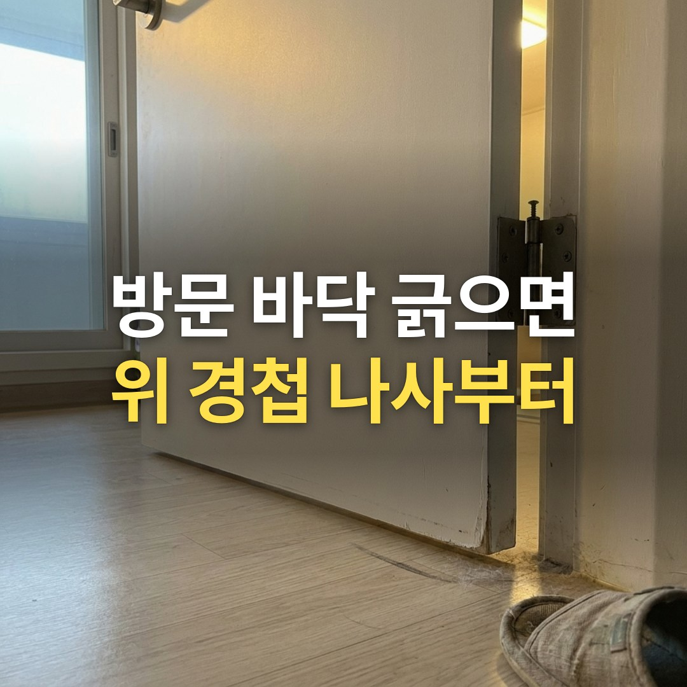
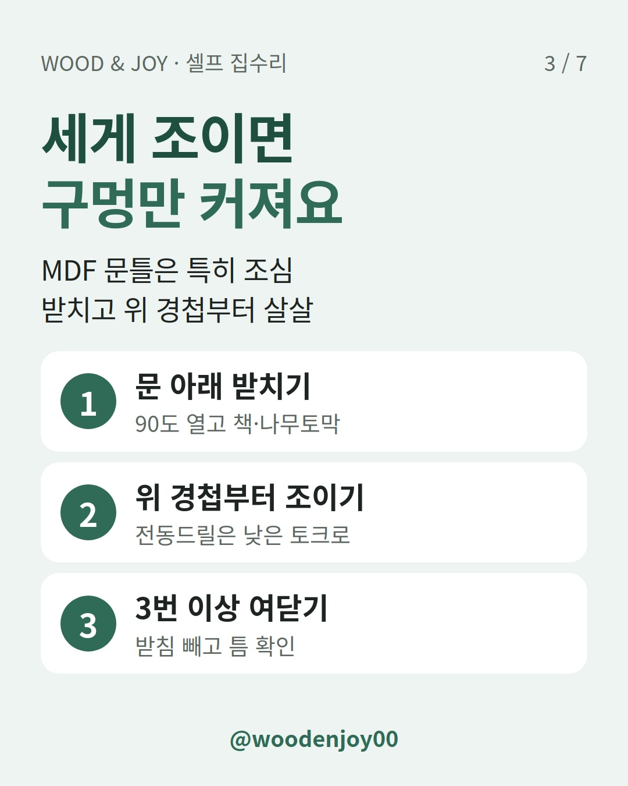
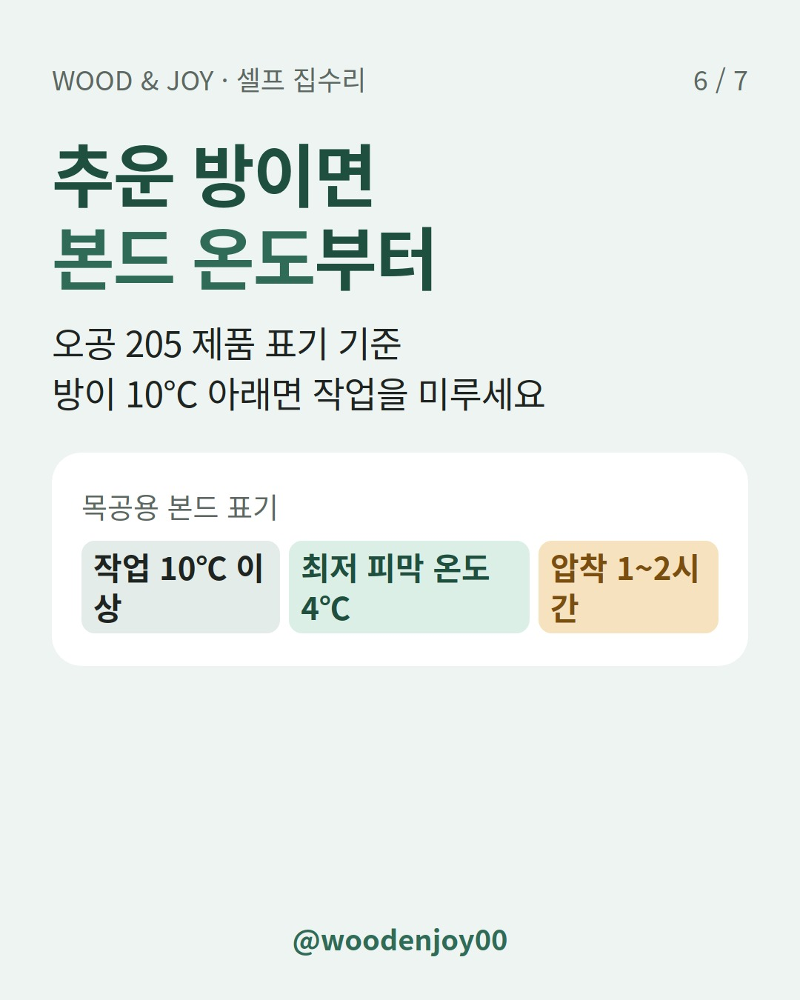

이 포스팅은 쿠팡 파트너스 활동의 일환으로, 이에 따른 일정액의 수수료를 제공받습니다.
방문 손잡이 쪽 아래가 바닥을 긁어서 나사를 조여 봐도 드라이버가 헛돌기만 하죠? 구멍을 나무로 메우면 고쳐지지만 꽉 채우고 본드까지 굳히면 이번엔 나사가 안 들어가요.
한 줄 결론: 문을 받치고 위 경첩부터 조여 보세요. 그래도 헛돌면 이쑤시개나 나무젓가락으로 구멍 속만 채우고, 본드가 굳은 다음 나사를 다시 박으면 돼요.

손잡이 쪽 아래 모서리가 바닥이나 문틀에 닿는다면 위쪽 경첩부터 확인하세요. 문이 처지는 가장 흔한 원인은 경첩 나사가 풀려 문 무게를 못 받치는 거예요.
막 풀린 정도라면 다시 조이기만 해도 나아질 때가 많아요. 순서만 지키세요.
전동드릴은 낮은 토크로 쓰세요. MDF 문틀은 너무 세게 조이면 구멍이 넓어져서 오히려 더 헐거워져요.

집에 있는 나무 재료면 충분해요. 나사가 들어가면서 메운 나무를 옆으로 밀어내고, 그 힘으로 꽉 물려요.
| 재료 | 이럴 때 | 주의할 점 |
|---|---|---|
| 이쑤시개 | 구멍이 조금 넓어졌을 때 | 여러 개 넣기 |
| 나무젓가락 | 구멍이 많이 넓어졌을 때 | 칼로 깎아 굵기 맞추기 |
| 목공용 본드 | 메운 나무가 밀려 나올 때 | 굳은 뒤에 나사 박기 |
본드는 흰색 수성 목공용 본드를 쓰면 돼요. 나무에 묻혀서 구멍에 밀어 넣으면 끝이에요.
그렇지 않아요. 싱크대 경첩을 고친 어떤 블로그 후기를 보면 나무젓가락과 이쑤시개로 빈틈없이 채우고 본드로 굳혔더니 나사가 들어가지 않았대요. 결국 드릴로 나사 길을 다시 뚫었다고 해요.
싱크대 문짝이 처졌을 때도 똑같이 하면 돼요. 경첩 종류 고르는 법은 싱크대 경첩 사기 전에, 아웃도어·인도어부터 확인하세요에 정리해 뒀어요.
목공용 본드는 온도에 따라 굳는 게 달라져요. 많이 쓰는 오공 205의 제품 표기를 보면 이래요.
난방 안 하는 방이라면 먼저 데운 다음 작업하세요.

나사 조이기·구멍 메우기·경첩 교체는 셀프로 해도 돼요. 문틀이 갈라졌거나 파내야 한다면 업체를 부르세요.
더 긴 나사로 문틀 안쪽 구조재까지 박아 고정하는 방법도 있어요. 다만 벽 속 배선이나 문틀 구조를 모른다면 너무 긴 나사는 박지 마세요.
경첩 자체가 휘었다면 새 경첩으로 바꿔야 해요. 홈을 파지 않고 다는 이지경첩(4인치)은 보통 일반 방문 하나에 3장씩 들어가요.
하기 전에 확인할 것
Q. 이지경첩도 같은 방법으로 고치나요?
A. 구멍 메우는 방법은 같아요. 이지경첩은 홈 없이 다는 가벼운 문(ABS·멤브레인 도어)용이에요.
Q. 본드는 얼마나 기다려야 하나요?
A. 오공 205는 압착 시간이 1~2시간으로 표기돼 있어요.
Q. 현관문이 덜 닫히는 것도 경첩 문제인가요?
A. 현관문은 도어클로저 속도부터 보세요. 도어클로저 속도 조절, 현관문이 덜 닫힐 때 나사 2개만 보세요
여러분 집 방문은 어느 쪽 모서리가 먼저 닿나요? 댓글로 알려 주세요.